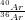
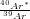
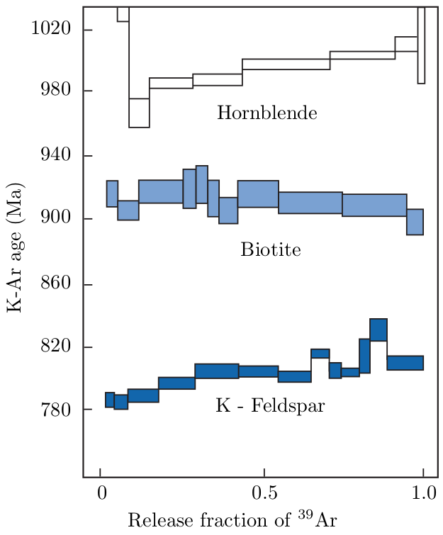

Potassium has three naturally occurring isotopes: 39K, 40K and 41K. 40K is radioactive and undergoes branched decay to 40Ca (by electron emission λβ- = 4.962 × 10-10yr-1) and 40Ar (by electron capture λe = 0.581 × 10-10yr-1) with a combined half life of 1.248 billion years. The positron emission mechanism mentioned in Chapter 2.2 has an extremely long half life and can therefore safely be neglected. In addition to 40Ar, argon has two more stable isotopes: 36Ar and 38Ar. Argon makes up ~1% of the terrestrial atmosphere, with a fixed isotopic composition of 40Ar/36Ar = 298.5 and 38Ar/36Ar = 0.187. The argon contained in K-bearing minerals is made up of a mixture of radiogenic (40Ar*) and non-radiogenic gas (40Ar∘):
|
| (6.1) |
with λ the total decay constant of 40K (λ = λe + λβ- = 5.543 × 10-10yr-1).
The 40K →40Ar* decay scheme forms the basis of the K-Ar geochronometer, with the following age equation:
|
| (6.2) |
Taking into account the ‘contaminated’ (aka ‘excess’ or ‘inherited’) argon component 40Ar∘ and analysing several cogenetic rocks or minerals with different K (and therefore 40Ar*) contents, an isochron equation can be formed by division through 36Ar:
|
| (6.3) |
which can be solved for t. Alternatively, we can simply assume that all the inherited argon has an atmospheric origin, so that (40Ar∕36Ar)∘ = 298.5.
From an analytical perspective, K-Ar dating is a two step process. Because K (an alkali metal) and Ar (a noble gas) cannot be measured on the same analytical equipment, they must be analysed separately on two different aliquots of the same sample. This limitation is overcome by the 40Ar/39Ar technique, which is a clever variation of the K-Ar method. The idea is to subject the sample to neutron irradiation and convert a small fraction of the 39K to synthetic 39Ar, which has a half life of 269 years. The age equation can then be rewritten as follows:
|
| (6.4) |
where ‘x’ stands for ‘sample’ and J is a constant of proportionality which encapsulates the efficiency of the 39K (n,p) 39Ar reaction and into which the factor λ∕λe is folded as well. The J-value can be determined by analysing a standard of known age ts which was co-irradiated with the sample:
|
| (6.5) |
In which the subscript ‘s’ stands for ‘standard’. The great advantage of
equation 6.4 over 6.2 is that all measurements can be completed on the
same aliquot and using a single instrument, namely a noble gas mass
spectrometer, which can analyse extremely small (down to μg-sized)
samples.
The 40Ar/39Ar-method also allows the analyst to investigate the extent of argon loss by means of stepwise heating experiments. This is done by degassing the sample under ultra-high vacuum conditions in a resistance furnace. At low temperatures, the weakly bound Ar is released, whereas the strongly bound Ar is released from the crystal lattice at high temperatures until the sample eventually melts. Plotting the apparent ages against the cumulative fraction of 39Ar released yields an 40Ar/39Ar age spectrum (Figure 6.1). If a rock or mineral has remained closed since its formation, the 40Ar/39Ar-ratio should remain constant over the course of the different heating steps, forming an ‘age plateau’. More complex (e.g. rising) release spectra, on the other hand, are diagnostic of complex thermal histories featuring partial argon loss. ‘saddle’ shaped release spectra are indicative of ‘excess’ argon. The composition of the inherited argon gas can be determined using a variant of the isochron method, assuming that all 36Ar is inherited:
|
| (6.6) |
If the Ar contamination is constant throughout the entire sample, then the -measurements will be arranged along a linear trend whose slope is a function of  and, hence, the age.

The K-Ar and 40Ar/39Ar-methods are some of the most widely used geochronometers and important tools in the calibration of the geologic time scale. The method is applicable to rocks and minerals > 106yr. Obviously, younger materials require more careful treatment of the inherited argon components.